Chapter 7: Learning to Manipulate — Learning by Touch
Overview
Parts I and II established the foundations of sensors, data, hands, and human demonstrations. This chapter combines all these elements to examine how robots actually learn to manipulate. From imitation learning and reinforcement learning to tactile-based manipulation, force-informed learning, and optimization-based alternatives — we map the full methodological landscape of tactile manipulation learning.
After reading this chapter, you will be able to... - Explain the mechanisms and differences between Diffusion Policy and ACT/ALOHA. - Compare tactile-only vs. visuo-tactile manipulation approaches. - Understand force-informed learning (DexForce #3, ForceVLA #1) and its significance. - Evaluate the methodological trade-offs among IL, RL, and optimization.
7.1 Imitation Learning: Diffusion Policy and ACT/ALOHA
Imitation learning (IL) learns policies by directly mimicking human demonstrations. Two approaches have dominated since 2023.
Diffusion Policy (2023)
Chi et al.[1] model robot actions as a conditional denoising diffusion process (RSS 2023 / IJRR 2024):
- Handles multimodal action distributions naturally
- 46.9% average improvement over prior methods
- 500+ citations: The mainstream paradigm for robot policy learning
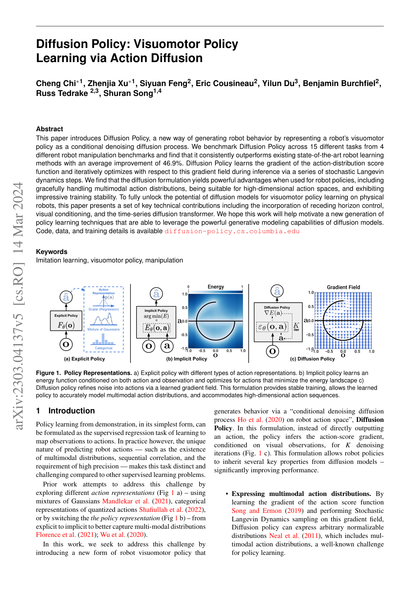
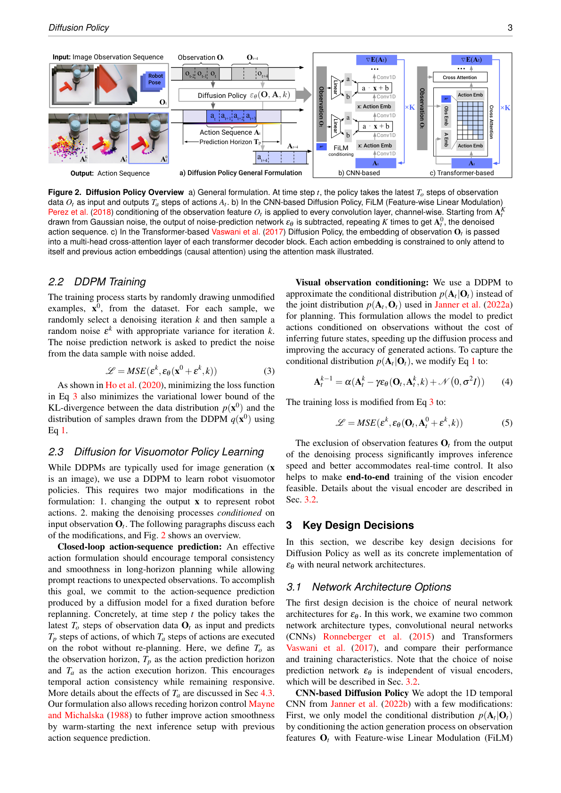
Key Paper: Chi, C., Feng, S., Du, Y., Xu, Z., Cousineau, E., Burchfiel, B., & Song, S. (2023). "Diffusion Policy: Visuomotor Policy Learning via Action Diffusion." RSS 2023 / IJRR 2024. Action diffusion for visuomotor policy learning. Natural handling of multimodal distributions makes it readily combinable with tactile conditioning.
ACT/ALOHA (2023)
Zhao et al. [2023, Stanford] achieve 80-90% bimanual success from 10-minute demonstrations via Action Chunking with Transformers:
- ALOHA: Sub-$20K bimanual hardware
- Mobile ALOHA: Mobile + bimanual integration (Chapter 11.2)
- 400+ citations
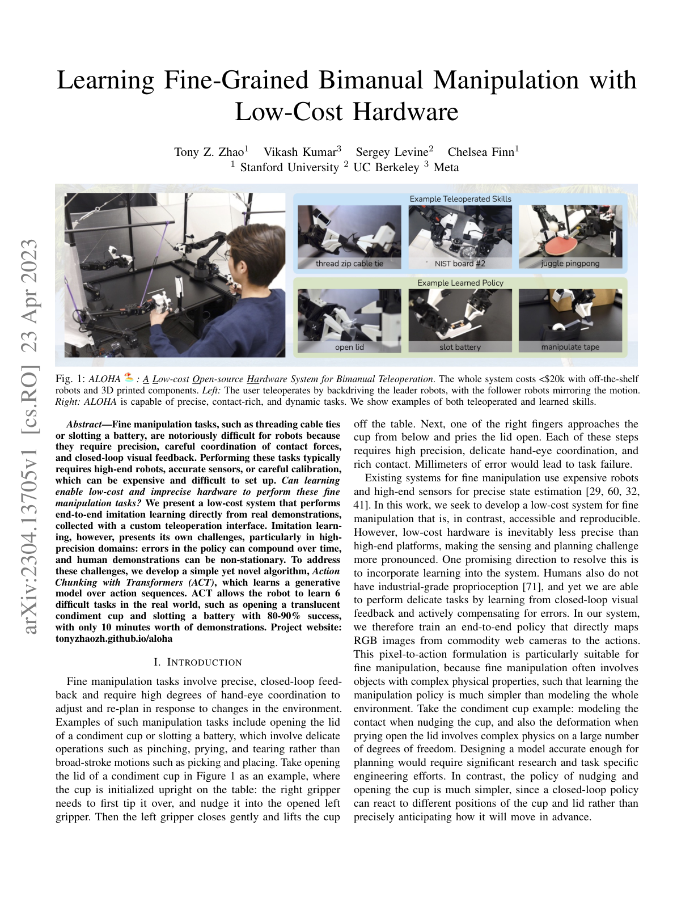
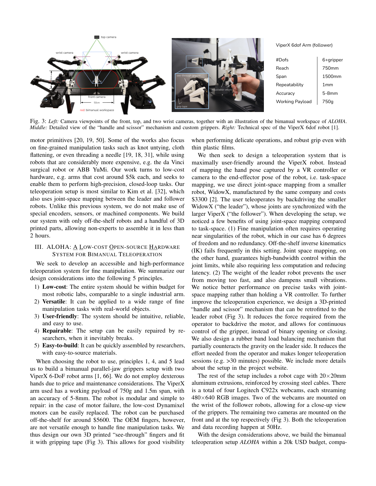
Key Paper: Zhao, T. Z., Kumar, V., Levine, S., & Finn, C. (2023). "Learning Fine-Grained Bimanual Manipulation with Low-Cost Hardware." RSS 2023. Transformer-based action chunking achieving fine-grained bimanual manipulation on low-cost hardware, open-sourced with ALOHA.
ALOHA Unleashed (2024)
Zhao et al. [2024, Google DeepMind] scaled up the ALOHA framework with ALOHA 2 hardware and large-scale data collection for contact-rich bimanual manipulation (CoRL 2024):
- Diffusion Policy backbone for complex bimanual coordination
- Tasks include tying shoelaces, hanging clothes, and other highly dexterous bimanual operations
- Demonstrates that scaling both data quantity and task complexity with Diffusion Policy yields robust contact-rich manipulation
- Bridges the gap between simple pick-and-place and truly dexterous manipulation
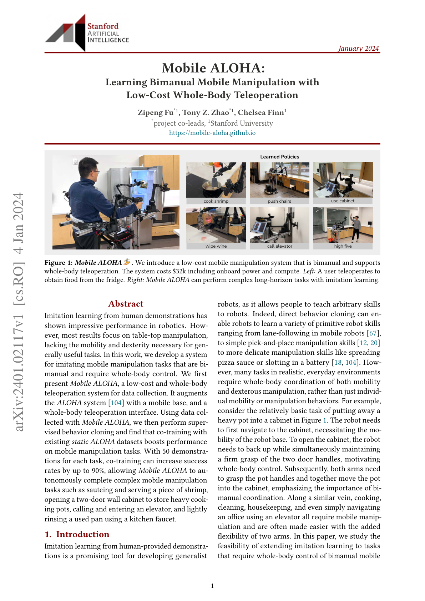
LAPA (2025)
LAPA [ICLR 2025] introduces latent action pretraining from human videos:
- VQ-VAE encodes human video actions into a latent space
- Learns action representations from human videos alone, without robot data
- Fine-tuned with small amounts of robot data afterward
- 30x data efficiency improvement over prior methods
- Aligns with the teleop-free approaches discussed in Chapter 10.7
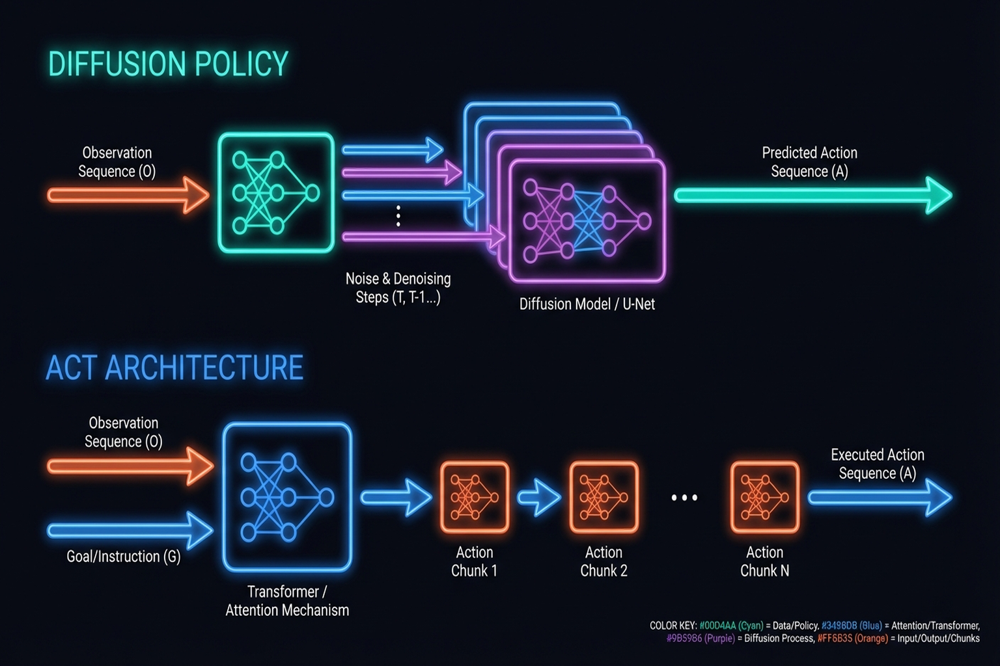
7.2 Reinforcement Learning: PPO with Tactile, Sim-to-Real RL
Reinforcement learning (RL) learns policies that maximize reward through trial and error. Key achievements combining tactile sensing with RL:
OpenAI Dactyl (2020)
A landmark in sim-to-real RL (IJRR):
- Rubik's Cube manipulation with Shadow Hand
- Trained entirely in simulation, zero-shot transferred to reality
- Proved the power of domain randomization
- 1,500+ citations
DeXtreme (2023)
Handa et al. [2023, NVIDIA] with Allegro Hand + Isaac Gym:
- Automatic Domain Randomization (ADR): Simultaneous physics + non-physics parameter randomization
- Synthetic visual data via Omniverse Replicator
- Vision-based policies outperform prior literature
- 200+ citations (Chapter 9.2 for details)
Tactile-Based Sim-to-Real RL
Yin et al.[6] developed a binary 3-axis tactile skin #13 sensor model:
- 5,000 FPS simulation speed
- S3-Axis: 93% success on out-of-distribution objects
- Zero-shot sim-to-real transfer
This work demonstrates that simplified sensors (binary contact) with wide coverage (whole hand) can outperform high-resolution sensors with limited coverage — aligning with Seminar 1's insight that "coverage matters more than resolution."
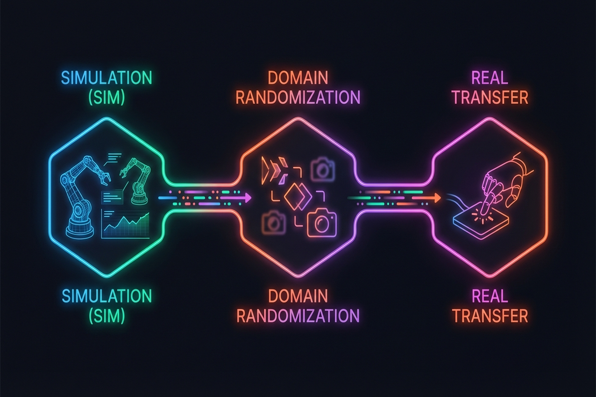
7.3 Tactile-Based Manipulation: Tactile-Only Rotation, Visuo-Tactile Fusion, PP-Tac #12
7.3.1 Tactile-Only In-Hand Rotation
Yin et al. [2023, RSS] and Pitz et al.[6] proved continuous object rotation possible with touch alone. However, as discussed in Seminar 1:
- Limitation: Tactile-only manipulation is currently limited to rotation
- Reason: Touch provides only local, post-contact information — no global information before contact
- Known environment assumption: Tactile-only LfD requires known environments
7.3.2 Visuo-Tactile Manipulation
Wu et al. [2025, ICRA] combined 3-axis tactile + vision (Realsense D435) + robot state:
- Canonical 3D Tactile #14 representation for sensor-independent transfer
- Play data pretraining + few-shot expert fine-tuning
- 78% average success (vs. T-DEX 63%)
Robot Synesthesia [9] achieved double-ball and 3-axis rotation using point cloud-based tactile representations (Chapter 3.1.4).
7.3.3 Visual-Tactile Self-Supervised Pretraining + RL (Ye et al., 2025)
Ye et al. [Science Robotics, 2025/26] perform visual-tactile self-supervised pretraining from human demonstrations, then learn robot policies with binary tactile sensing + RL:
- Self-supervised visual-tactile representation learning from human demo data
- Achieves 85% success with binary (contact/no-contact) tactile sensors alone
- Counterintuitive finding: Simple sensors with wide coverage outperform high-resolution sensors with narrow coverage
- Consistent with Yin et al.[6]'s finding (binary tactile 93%) in §7.2
This result carries significant implications for tactile sensor design — spatial coverage may matter more than resolution for manipulation learning.
7.3.4 PP-Tac: Tactile Grasping of Thin Objects
PP-Tac [2025, RSS] solves grasping of extremely thin objects (paper, cards):
- R-Tac: Round camera-based gel tactile sensor
- Slip detection CNN: Real-time slip detection
- Online force control: Force adjustment based on detected slip
- Diffusion Policy integration
- 87.5% success on thin/deformable objects
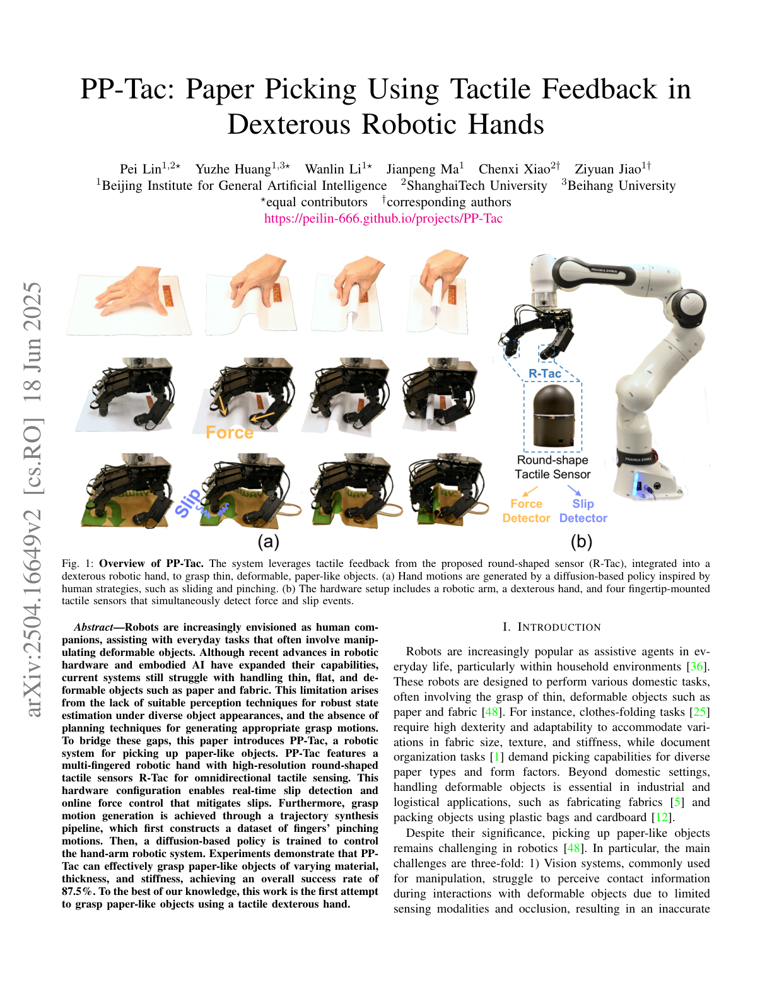
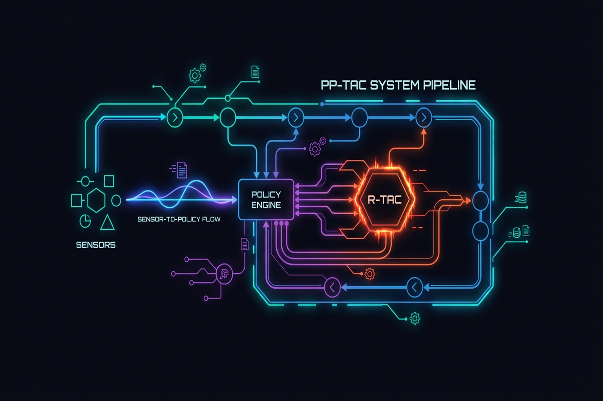
7.4 Force-Informed Learning: DexForce and ForceVLA
Approaches that explicitly integrate force information into learning.
DexForce (2025)
Hou et al.[8] naturally record force information from kinesthetic teaching:
- Spring model: $x_f = x_o + k_f \cdot f$ (single parameter $k_f = 0.0045$)
- Generates force-informed action targets
- 76% average success across 6 tasks
- Uses CoinFT sensors on Allegro Hand fingers for 6-axis force/torque recording during kinesthetic demonstrations
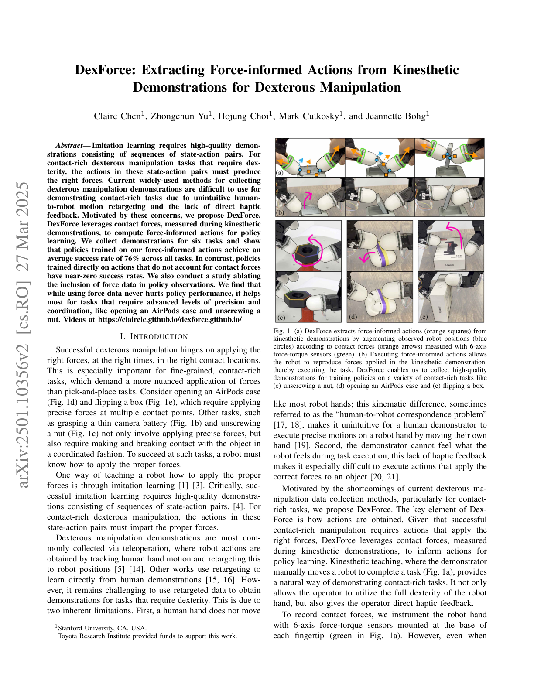
Key Paper: Hou, Y., et al. (2025). "DexForce: Learning Contact Forces from Human Demonstrations." Spring model-based force-informed demonstration learning. A single parameter $k_f$ naturally integrates force information into action targets.
DexForce's results on dexterous manipulation are striking: without F/T and compliance, tasks achieve ~0% success; with both, success rises to >90% — demonstrating that force sensing is not merely helpful but essential for contact-rich dexterous tasks [11].
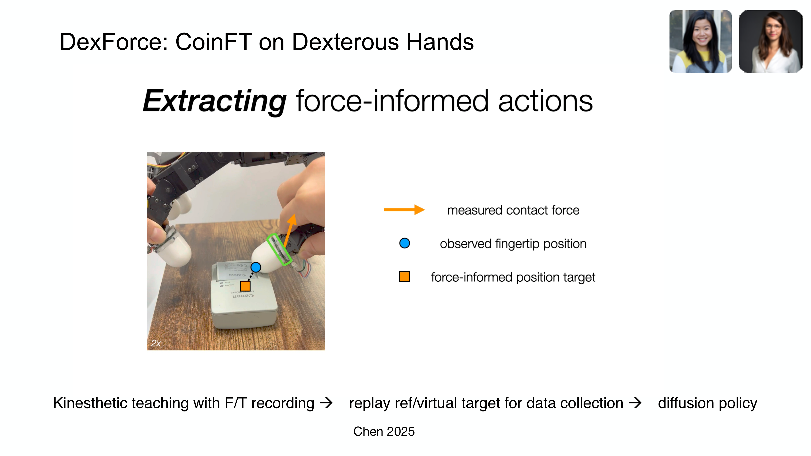
Adaptive Compliance Policy — ACP (2025)
The Adaptive Compliance Policy (ACP) [Hou et al., 2025], developed as part of the UMI-FT framework, addresses a fundamental trade-off in contact-rich manipulation: compliance reduces impact forces (improving safety) but degrades tracking accuracy.
ACP's key insight is selective compliance — learned from human demonstrations, the policy modulates compliance directionally:
- Compliant in the direction normal to the contact surface (absorbing impact)
- Stiff in tangential directions (preserving motion tracking accuracy)
This is implemented as a low-level controller running at ~500 Hz, separate from the high-level Diffusion Policy (~10 Hz). The architecture resembles the human sensorimotor hierarchy: a "brain" (VLA/Diffusion Policy) handles high-level planning while "reflexes" (ACP) handle fast contact modulation. Task results demonstrate ACP's necessity: on whiteboard wiping, force control without compliance leads to excessive force; on light bulb insertion, the robot cannot perform haptic search without compliance [28].
ForceVLA (2025)
Yu et al.[8] implement dynamic force-vision-language fusion:
- FVLMoE: 4-expert Mixture of Experts architecture
- Force integration into pi0-based VLA
- +23.2 percentage points over force-free baseline
- 90% success under visual occlusion
ForceVLA represents the direction of integrating tactile/force as a "first-class modality" in VLA models (→ Chapters 8.4, 11.1).
Feel the Force: Contact-Driven Learning from Humans (Adeniji et al., 2025)
Adeniji et al.[8] present a direct pipeline from human tactile glove demonstrations to robot policies with zero-shot transfer:
- Human demonstrators wear a tactile glove while performing manipulation tasks
- Force/contact signals are recorded alongside visual observations
- A contact-driven policy is learned that transfers to a robot without any robot-specific data
- 77% average success across 5 contact-rich tasks
- Demonstrates that human force demonstrations contain sufficient information for cross-embodiment transfer
This work validates the same core insight as UMI-FT and DexForce: force information from human demonstrations is transferable to robots, and collecting it at scale can bypass the teleoperation bottleneck. The difference is that Adeniji et al. achieve this without any robot data at all — pure zero-shot human-to-robot transfer via force signals.
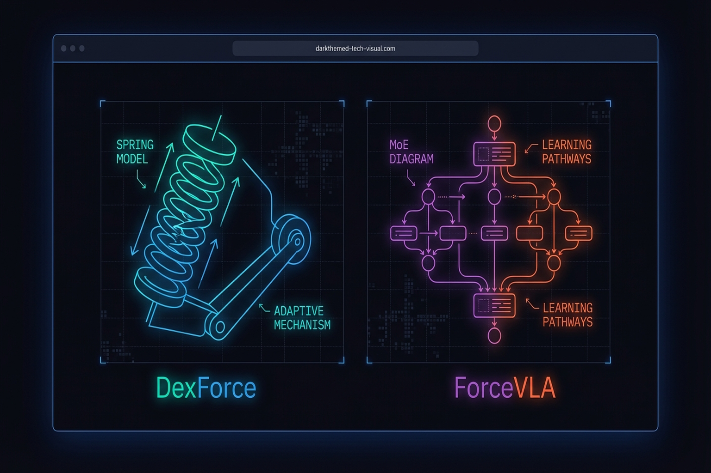
7.5 Optimization-Based Alternatives: The RGMC Champion
Not all manipulation requires learning. Yu et al.[8]'s RGMC Champion solution:
- Kinematic trajectory optimization: No pretraining required
- 40 waypoints in 5x5x5 cm space
- 5 mm average error
- ICRA RGMC Champion + Most Elegant Solution
This result shows that for structured problems, optimization can match or exceed learning-based approaches.
FARM: Tactile-Conditioned Diffusion Policy (2025)
FARM [2025] infers force signals from high-dimensional tactile data and conditions Diffusion Policy on tactile feedback.
TLA: Tactile-Language-Action Model (2025)
TLA[15] implements language-conditioned tactile control with 24,000 tactile-action instruction pairs, enabling natural language commands for contact-rich manipulation.
Non-Prehensile Tactile Manipulation
Tactile-Driven Non-Prehensile Manipulation [RSS 2024] controls extrinsic contact modes via tactile feedback for precise object manipulation without grasping.
7.6 Methodology Comparison: IL vs. RL vs. Optimization
| Property | Imitation Learning | Reinforcement Learning | Optimization |
|---|---|---|---|
| Data needs | Demonstrations (10-50) | Millions of sim steps | Model/structural knowledge |
| Generalization | Within demo distribution | Depends on reward design | Structured problems |
| Sim-to-Real | Direct real-world | Gap exists (DR needed) | Model accuracy dependent |
| Tactile integration | Natural | Via reward | Contact model needed |
| Representative | Diffusion Policy, ACT | DeXtreme, Dactyl | RGMC Champion |
| Strengths | Data efficient | Superhuman possible | Interpretable, guarantees |
| Limitations | Out-of-distribution failure | Real-world exploration risk | Unstructured problems |
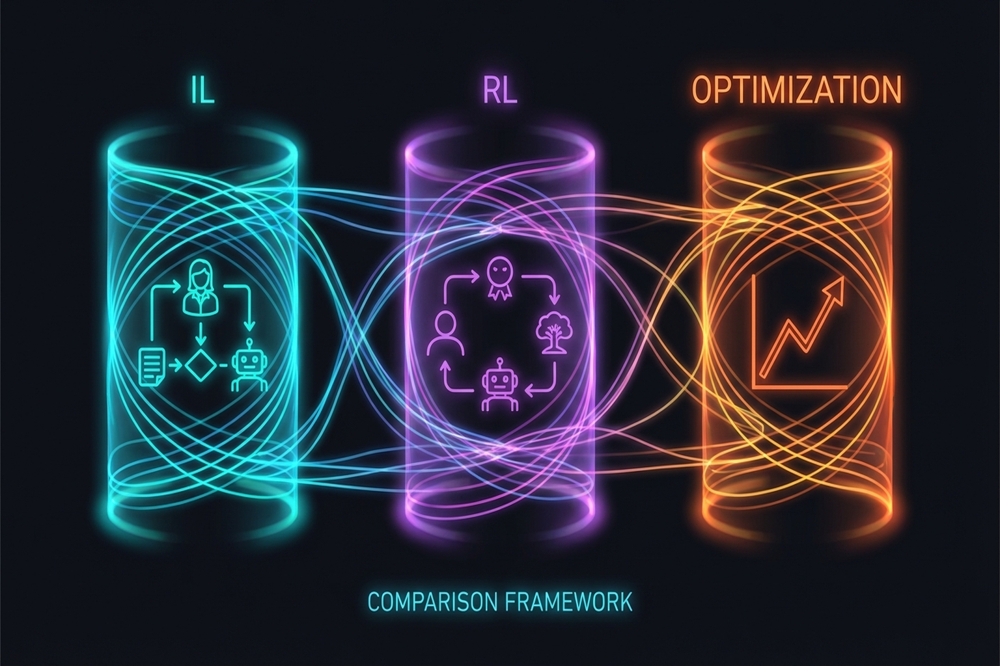
Surveys provide broader context:
- Learning-Based In-Hand Manipulation Survey [Frontiers, 2024]
- Robot Intelligent Grasping Based on Tactile Perception [Elsevier, 2024]
- Dexterous Manipulation Through Imitation Learning Survey[22]
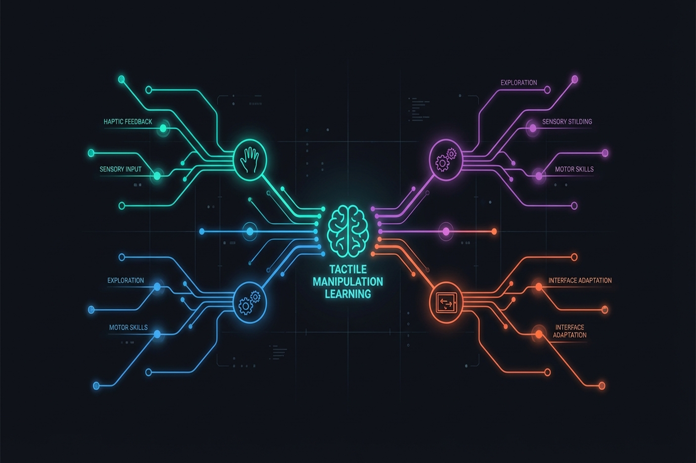
Summary and Outlook
Tactile manipulation learning is a pluralistic landscape where Diffusion Policy and ACT lead imitation learning, DeXtreme and Dactyl push RL boundaries, and the RGMC Champion demonstrates optimization's viability. Tactile information is progressively being elevated to a first-class modality as seen in FARM, TLA, and ForceVLA, while PP-Tac proves tactile's direct practical value on real problems (thin object grasping).
The next chapter examines the frontier of these learning methods — VLA models (Chapter 8: Vision-Language-Action Models).
References
- Chi, C., Feng, S., Du, Y., Xu, Z., Cousineau, E., Burchfiel, B., & Song, S. (2023). Diffusion Policy: Visuomotor policy learning via action diffusion. RSS 2023 / IJRR 2024. arXiv:2303.04137.
- Zhao, T. Z., Kumar, V., Levine, S., & Finn, C. (2023). Learning fine-grained bimanual manipulation with low-cost hardware (ACT/ALOHA). RSS 2023. arXiv:2304.13705.
- Various. (2020). OpenAI Dactyl: Solving Rubik's Cube with a robot hand. IJRR.
- Handa, A., et al. (2023). DeXtreme: Transfer of agile in-hand manipulation from simulation to reality. ICRA 2023. arXiv:2210.13702.
- Yin, Z.-H., et al. (2023). Rotating without seeing: Towards in-hand dexterity through touch. RSS 2023.
- Yin, Z.-H., et al. (2024). Learning in-hand translation using a binary 3-axis tactile skin. arXiv preprint. [#13](https://terry.artlab.ai/en/posts/2407-tactile-skin-inhand-translation)
- Pitz, J., et al. (2024). Dextrous tactile in-hand manipulation using modular RL. Humanoid Robots.
- Wu, C., et al. (2025). Canonical 3D tactile for visuo-tactile imitation learning. ICRA 2025. [#14](https://terry.artlab.ai/en/posts/2409-3dtactile-dex)
- Yuan, Y., et al. (2024). Robot Synesthesia: In-hand manipulation with visuotactile sensing. ICRA 2024.
- Lin, P., Huang, Y., Li, W., Ma, J., Xiao, C., & Jiao, Z. (2025). PP-Tac: Paper picking using omnidirectional tactile feedback in dexterous robotic hands. RSS 2025. [#12](https://terry.artlab.ai/en/posts/2504-pp-tac)
- Chen, C., Yu, Z., Choi, H., Cutkosky, M., & Bohg, J. (2025). DexForce: Extracting force-informed actions from kinesthetic demonstrations for dexterous manipulation. IEEE Robotics and Automation Letters. [#3](https://terry.artlab.ai/en/posts/2501-dexforce-force-informed-actions)
- Yu, J., Liu, H., Yu, Q., et al. (2025). ForceVLA: Enhancing VLA models with a force-aware MoE for contact-rich manipulation. NeurIPS 2025. [#1](https://terry.artlab.ai/en/posts/2505-forcevla-force-aware-moe)
- Yu, M., et al. (2025). RGMC Champion: Kinematic trajectory optimization. IEEE RA-L.
- Helmut, E., Funk, N., Schneider, T., de Farias, C., & Peters, J. (2025). Tactile-conditioned diffusion policy for force-aware robotic manipulation. ICRA 2026. arXiv:2510.13324.
- Hao, P., Zhang, C., Li, D., Cao, X., Hao, X., Cui, S., & Wang, S. (2025). TLA: Tactile-language-action model for contact-rich manipulation. arXiv preprint. arXiv:2503.08548.
- Oller, M., Berenson, D., & Fazeli, N. (2024). Tactile-driven non-prehensile object manipulation via extrinsic contact mode control. RSS 2024.
- Various. (2025). Robust in-hand manipulation with motion-contact planning. arXiv:2505.04978.
- Huang, J., Wang, S., Lin, F., Hu, Y., Wen, C., & Gao, Y. (2025). Tactile-VLA: Unlocking vision-language-action model's physical knowledge for tactile generalization. OpenReview.
- Various. (2024). Survey of learning-based in-hand manipulation. Frontiers in Robotics and AI.
- Various. (2024). Robot intelligent grasping based on tactile perception. Elsevier.
- Zhao, C., Yu, Y., Ye, Z., Tian, Z., Zhang, Y., & Zeng, L.-L. (2025). Universal slip detection of robotic hand with tactile sensing. Frontiers in Neurorobotics, 19. https://doi.org/10.3389/fnbot.2025.1478758
- Li, Y., et al. (2025). Dexterous manipulation through imitation learning: A survey. arXiv preprint. arXiv:2504.03515.
- Hogan, N. (1985). Impedance control: An approach to manipulation. JDSMC, 107(1), 1-24.
- Various. (2025). LAPA: Latent action pretraining from human videos. ICLR 2025.
- Ye, L., et al. (2025). Visual-tactile self-supervised pretraining for robotic manipulation. Science Robotics.
- Choi, H., Kim, A., & Cutkosky, M. R. (2024). CoinFT: A compact and affordable capacitive six-axis force/torque sensor. IEEE Sensors Journal.
- Choi, H., Hou, Y., Song, S., & Cutkosky, M. R. (2025). UMI-FT: Learning compliant manipulation at scale with force/torque sensing. arXiv preprint.
- Choi, H. (2026). Multimodal Data for Robot Manipulation. SNU Data Science Seminar.
- Zhao, T. Z., et al. (2024). ALOHA Unleashed: A simple recipe for robot dexterity. CoRL 2024.
- Adeniji, A., et al. (2025). Feel the Force: Contact-driven learning from humans. arXiv:2506.01944.